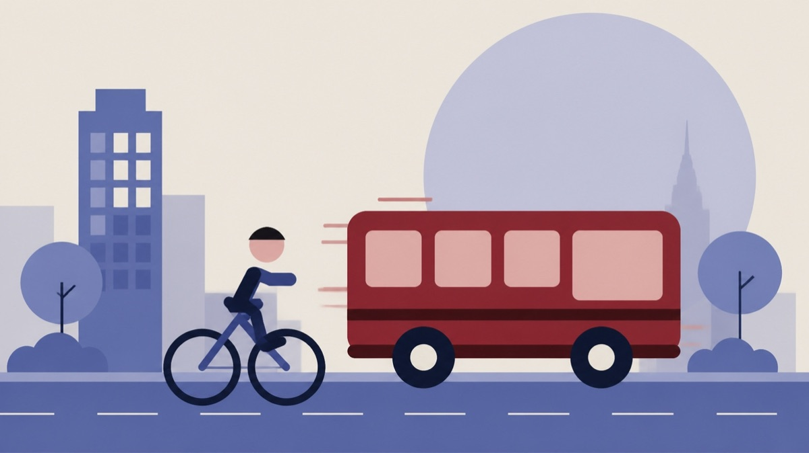

Besluttet 22. september, Klima- og Miljøudvalget, Odense
Forslag til Odense Kommunes høringssvar til FynBus' Mobilitetsplan

Kort fortalt
- Hvem
- Klima- og Miljøudvalget, Odense Kommune
- Hvornår
- Tirsdag 22. september 2026
- Status
- Besluttet. Klima- og Miljøudvalget ændrede sagen til en beslutningssag (B-sag) og godkendte forvaltningens udkast til høringssvar.
Er noget forkert her? Skriv til os
Læs hele sagen Kommunens egen tekst
Indstilling
Klima- og Miljøforvaltningen indstiller, at udvalget drøfter forvaltningens udkast til
høringssvar til FynBus' mobilitetsplan 2027-2030.
Sagsfremstilling
For en nærmere beskrivelse af sagen og den videre proces henvises til sagsresuméet samt de
vedlagte bilag.
Økonomi
Denne sag har ikke økonomiske konsekvenser for Odense Kommune.
Beslutning
Klima- og Miljøudvalget ændrede sagen til en beslutningssag (B-sag) og godkendte
forvaltningens udkast til høringssvar.
Kilde: Odense Kommune, Klima- og Miljøudvalget, referat fra mødet tirsdag 22. september 2026, punkt 4. Læs den originale sag hos kommunen.